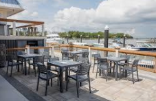
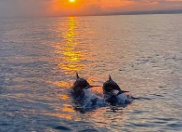
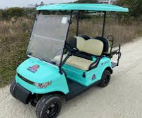
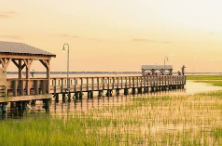
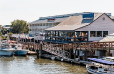
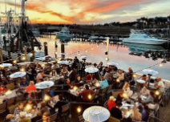
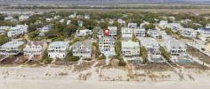

Isle of Palms Bachelorette Activities
Beach days, live music, and a sunset on the marsh, with Shem Creek in Mount Pleasant as a side trip. Here is how to fill a bachelorette weekend on Isle of Palms.
- From downtown Charleston
- About 15 miles by road, a 25 to 35 minute drive depending on traffic.
- Best seasons
- Spring and fall, when the weather suits a beach day and a porch night.
- Home base
- Front Beach on Ocean Boulevard, walkable to the county park, bars, and restaurants.
- Drinks on the sand
- Not allowed. Keep them on the porch or the patio.
The best Isle of Palms bachelorette activities are a beach day at the county park, live music and rooftop drinks on Front Beach, and a sunset on the marsh side of the island. Mount Pleasant sits between Charleston and the island, so you can also stop at Shem Creek on the way in or out for waterfront bars, kayaks, and shrimp boats.
This guide covers what to do, where to eat and drink, where to stay, and the local rules that catch bachelorette groups off guard. Staying near Folly instead? See our guide to Folly Beach bachelorette activities. To split the weekend with downtown, start with our full guide to Charleston bachelorette activities.
The best Isle of Palms bachelorette activities
Daytime plans first. Isle of Palms does its best work between brunch and sunset.
-
Set up at Isle of Palms County Park
At 14th Avenue beside Front Beach, the county park has a boardwalk to the sand, restrooms, showers and changing stations, sand volleyball, picnic tables with grills, and beach gear rentals. Lifeguards are on duty in summer.
Good to know: the park charges for parking, with higher rates in summer, and the lot often fills by mid-morning on weekends. Walking in is free.
-

Michael At Your Place
Skip the drive to a club and bring the fun to your rental. One entertainer comes out for a traditional show with plenty of interaction.
Good to know: $200 for up to 90 minutes. Shows usually run about 60 minutes.
-

Bar-hop Front Beach on Ocean Boulevard
Start at The Windjammer for a beach bar and live music, move to the rooftop at Coconut Joe’s Beach Grill, and finish at The Dinghy for burgers and drinks near Front Beach. The first two are on the same stretch of Ocean Boulevard.
Good to know: The Windjammer opens at 11 a.m. and stays open late, but hours change, so check before you go.
-

Take a sunset dolphin cruise from the marina
Barrier Island Eco Tours runs naturalist-led trips from the Isle of Palms Marina, including a 2.5-hour sunset dolphin cruise on a covered pontoon that holds up to 49 passengers. Sunset views are easiest from the marsh side of the island.
Good to know: confirm the group size and drink policy when you book.
-
Paddle the marsh by kayak or paddleboard
Coastal Expeditions runs guided kayak and paddleboard tours and rentals from an outpost at the Isle of Palms Marina, through salt marsh where dolphins, pelicans, and egrets are common.
Good to know: the creeks wind like a maze and the inlet toward Sullivan’s Island has strong currents between tides, so first-timers should book a guided tour.
-

Rent a golf cart or LSV
A cart is a fun way to hop between your rental, the beach, and Front Beach without a car for every trip.
Good to know: standard golf carts are daylight-only and can’t run along Palm Boulevard. Street-legal LSVs can use Palm Boulevard and run after dark, but rental companies set their own minimum ages, often 21 to drive. Neither can take the Isle of Palms Connector, and impaired driving laws apply to carts.
Add Shem Creek in Mount Pleasant
Shem Creek is a working shrimp-boat creek lined with waterfront bars and restaurants, a public boardwalk, and paddlers. It is in Mount Pleasant, between Charleston and Isle of Palms, so it works as a stop on arrival day, a morning-after adventure, or a full alternate day.
-

Walk the Shem Creek Boardwalk
The public boardwalk at Shem Creek Park runs over the marsh past shrimp boats, with dolphins and pelicans often in view. It is free to visit, and late afternoon is the time to watch the boats come in.
-

Paddle Shem Creek at golden hour
Paddle the salt marsh as the shrimp boats come in, a quieter, more scenic alternative to a booze cruise. Guided tours from outfitters like Coastal Expeditions run about two hours and include instruction, so no experience is needed.
-

Hop the creek’s waterfront bars
Red’s Ice House for cold beer and roasted oysters at sunset, Saltwater Cowboys for BBQ and seafood on a big deck with live music, and Tavern & Table for small plates and dockside cocktails.
Good to know: most creek spots run weekday happy hours, roughly 4 to 7 p.m.
-

Float the harbor on the Friki Tiki
Tiki Tours of Charleston runs Charleston’s floating tiki bar on a 2.5-hour semi-private harbor cruise built for bachelor and bachelorette crews, with a sound system, a restroom, and a splash stop if you want to jump in.
Good to know: a flat rate covers up to 20 guests, roughly $500 to $700 per group.
-

Book a dockside dinner
NICO Oysters + Seafood has a wood-fired, French-influenced menu and the area’s largest raw oyster selection. Vickery’s Bar & Grill adds Cuban flavors and oyster bisque, and Water’s Edge is a long-running creek favorite.
Good to know: call ahead for a group reservation.
-

Book a spa morning at Charleston Harbor Resort
Book the group in for facials and massages the morning after a big night out. The resort is in Mount Pleasant, a short drive from the creek and the island.
Good to know: treatments run about $130 to $180 per person for 50 to 80 minutes.
Where to eat and drink on Isle of Palms
Most of the action is on Ocean Boulevard at Front Beach, with waterfront spots on the marsh and Breach Inlet side.
Morning
- Coconut Joe’s Beach GrillOcean Blvd, Front BeachWeekend brunch on Saturdays and Sundays from 10 a.m., with an oceanfront deck and a rooftop bar. Hours change, so check before you go.
Lunch and beach snacks
- The Windjammer1008 Ocean BlvdA Front Beach landmark since 1972. Order at the bar for burgers, wings, and peel-and-eat shrimp, with a live band on the deck.
- The DinghyA casual beach bar and grill near Front Beach known for burgers, seafood, drinks, and live music.
Sunset
- The Boathouse at Breach InletWaterfront seafood with views of Breach Inlet.
- Islander 71 Fish House & Deck BarA waterfront fish house with a raw bar, a deck bar, and elevated coastal cooking.
Dinner
- Coda del PesceOcean Blvd, Front BeachUpscale Italian seafood right on the ocean, the pick for a celebration dinner.
- Acme Lowcountry KitchenLowcountry staples for a group that wants a proper sit-down meal.
After dark
- Smuggler’s Island Eats & Rum ShackRum cocktails and island vibes, with live entertainment on weekends.
- Front Beach bar-hopBetween Coconut Joe’s rooftop, the Windjammer’s stages, and Coda del Pesce you can cover the strip on foot. Save a rideshare for the trip home.
All picks are our own. No business paid to be listed. For more meals on the mainland, see our guide to the best restaurants for a Charleston bachelorette.
Where to stay for an Isle of Palms bachelorette weekend
Most groups do better in a house than a hotel block. The choice is a house near Front Beach or a resort stay at Wild Dunes.

Rent a house near Front Beach
A house within a short walk or cart ride of Front Beach puts the bars, the restaurants, and the county park close by. Look for a big porch and enough bedrooms that nobody sleeps on the couch.
Good to know: the city typically limits overnight guests in short-term rentals to two per bedroom plus two more, up to 12, so count your group before you book and tell the host it is a bachelorette weekend.
Book Wild Dunes Resort
A gated resort at the far end of the island with villas, condos, and homes, two golf courses, and the marina outpost for kayaks and paddleboards less than two miles away. It suits groups that want resort amenities and a quieter setting.
Good to know: guests check in through the Welcome Center, and the resort has its own parking and vehicle rules, so read its policies before you book.
Some groups split the trip, a night or two downtown and a night or two on the island. If that is your plan, see where to stay in our Charleston bachelorette activities guide.
A one-day Isle of Palms bachelorette itinerary
Adjust the times to your group. The order is what matters: beach and water while it is light, then Front Beach after dark.
- MorningWeekend brunch at Coconut Joe’s, then set up at Isle of Palms County Park before the lot fills.
- Late morningBeach time, sand volleyball, and rented chairs and umbrellas.
- LunchBurgers and wings at The Windjammer, or something lighter at The Dinghy.
- AfternoonPaddle the marsh with a guide, or drive to Shem Creek for the boardwalk and a happy hour on the water.
- Golden hourA sunset dolphin cruise from the Isle of Palms Marina, or sunset on a Shem Creek deck.
- DinnerItalian seafood at Coda del Pesce, or waterfront seafood at The Boathouse at Breach Inlet.
- NightLive music at The Windjammer, then the rooftop at Coconut Joe’s.
- LateRideshare back to the house. Skip driving carts after drinking.
Know before you go
Isle of Palms enforces its rules, and a few of them affect bachelorette plans directly.
On the beach
- No alcohol and no glass. Fines start at $100 per offense.
- No balloons, single-use plastic bags or straws, or foam coolers, cups, and containers, so skip the balloon arch and bring fabric banners.
- No smoking or vaping on the beach or the access paths.
- No fireworks or open fires, and no sleeping on the beach overnight.
- Fill any holes you dig before you leave.
Golf carts and LSVs
- Standard golf carts: daylight only, on roads with a 35 mph limit or less, and not along Palm Boulevard.
- Street-legal LSVs can use Palm Boulevard and run after dark.
- Neither can go on the beach, beach access paths, sidewalks, or the Isle of Palms Connector.
- Drivers need a license, and rental companies set their own minimum ages.
- Impaired driving laws apply to carts.
Parking and getting home
- Paid parking near Front Beach runs March 1 through October 31, 8 a.m. to 8 p.m., at city lots and Ocean Boulevard meters.
- Free street parking along Palm Boulevard sits farther from Front Beach. Keep all four wheels off the road and clear of beach access paths.
- The county park lot charges a fee and often fills by mid-morning on weekends.
- Plan a rideshare for nights out, especially after drinking.
Rules come from the City of Isle of Palms and can change. Check the city’s website for current rules before your trip.